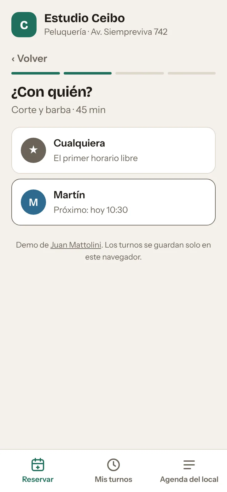
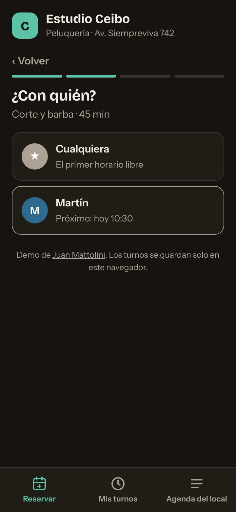
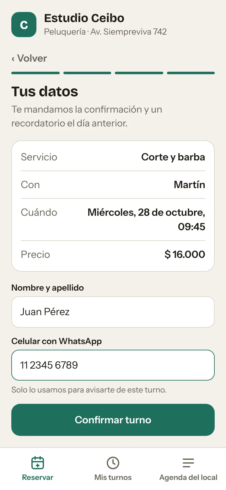
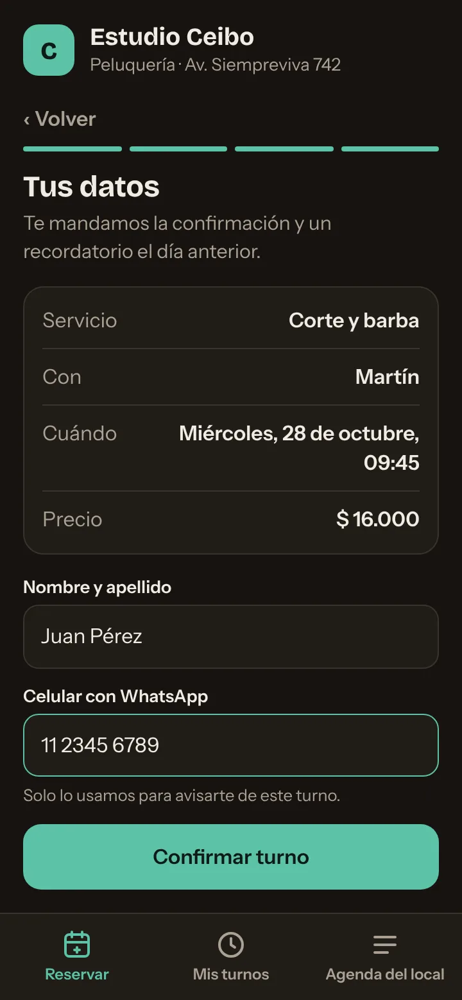
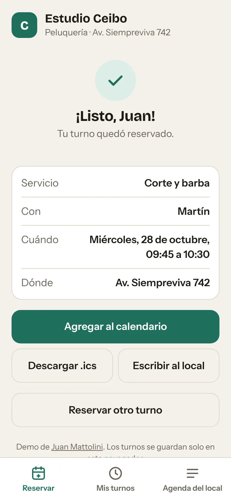
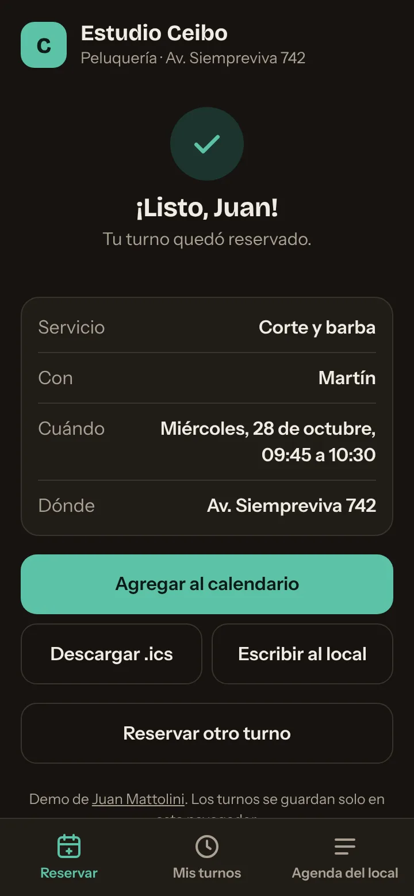

Reserva en cuatro pasos
Servicio, profesional, día y hora, y datos. Cada paso muestra lo que ya elegiste y se puede volver atrás sin perder nada.
La app recuerda el nombre y el celular para la próxima reserva.
Una app para que los clientes de un negocio con turnos (peluquería, consultorio, taller) reserven solos desde el celular, y el local vea su agenda del día sin planillas ni mensajes cruzados. La demo usa una peluquería ficticia, Estudio Ceibo, y se puede probar completa.










Capturas de la demo con turnos de ejemplo: los nombres son ficticios.
Servicio, profesional, día y hora, y datos. Cada paso muestra lo que ya elegiste y se puede volver atrás sin perder nada.
La app recuerda el nombre y el celular para la próxima reserva.
Cada servicio tiene su duración y cada profesional hace solo algunos servicios. Un horario aparece libre solo si el servicio entra completo antes del cierre y no se pisa con otro turno de esa persona.
Si al cliente le da igual, la app busca en cada horario a alguien que haga ese servicio y esté libre, y le asigna el turno.
Al confirmar, el turno se agrega a Google Calendar o se descarga como .ics con un aviso 2 horas antes. También arma el mensaje para el local con todos los datos.
Los próximos turnos del cliente con opción de cancelar hasta 2 horas antes. Al cancelar, el horario vuelve a quedar libre para otra persona.
Los turnos de cada día ordenados por hora, con filtro por profesional, ocupación de cada uno y facturación estimada. Cada turno se marca como atendido o ausente.
Un botón arma el recordatorio por WhatsApp para ese cliente.
El cliente
Los turnos
El local
La misma función decide qué horarios mostrar, qué días están llenos y cuál es el próximo turno de cada profesional. Así lo que ve el cliente nunca contradice lo que ve el local.
Entre que el cliente elige un horario y escribe su nombre, otra persona puede reservarlo. Antes de guardar, la app revisa de nuevo que siga libre y, si no, lo devuelve a elegir horario.
Los horarios van cada 15 minutos, pero un color de 90 minutos ocupa seis casilleros. Eso evita los huecos que dejan los sistemas de turnos fijos de media hora.
No se pueden pedir turnos para dentro de menos de una hora ni cancelar con menos de dos. Son valores que cada negocio ajusta.
Solo nombre y celular, y solo para avisar del turno. La demo no manda nada a ningún servidor: todo queda en el navegador de quien la prueba.
Servicios, profesionales y horarios están en tablas simples al principio del código. Pasar a Supabase es mover esas tablas a la base y sumar una restricción para que dos turnos no se superpongan.
Demo desarrollada en octubre de 2026.
¿Tu negocio trabaja con turnos? Contame cómo los manejás hoy.
mattolinijuansebastian@gmail.com